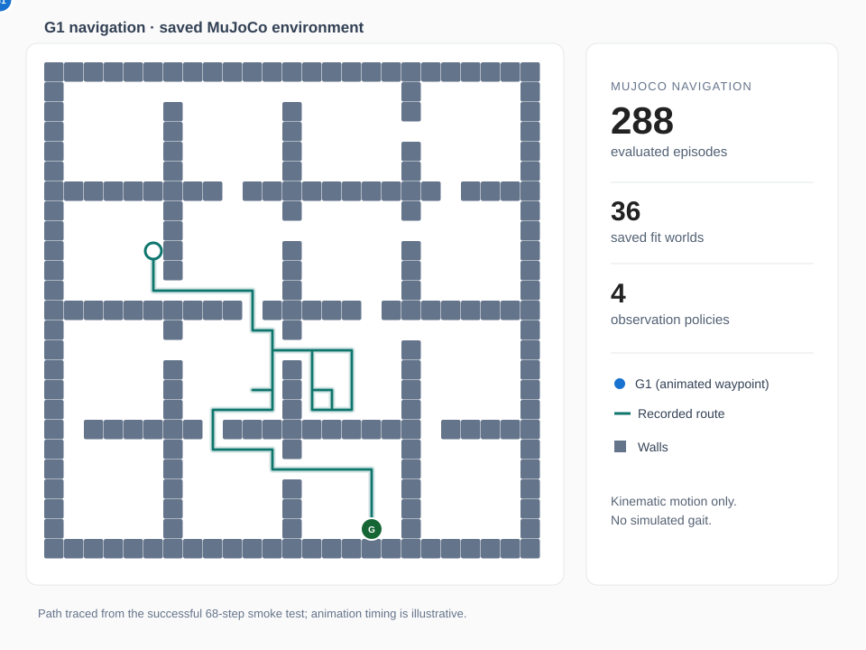

Humanoid Spatial Memory
3D Perception and Navigation in Changing Indoor Environments
Abstract
How often should a humanoid robot refresh its spatial memory when people move through corridors and obstacles change? I built a MuJoCo navigation testbed around a Unitree G1 model, combining ray-based three-dimensional (3D) observations, a two-dimensional (2D) occupancy memory, orientation-aware route planning, and collision-checked kinematic movement. I compared four existing map-update policies (Static, Periodic, Age, and Uncertainty) across 288 matched episodes in 36 saved indoor environments. Periodic reached 67/72 goals (93.1%), compared with 58/72 (80.6%) for Uncertainty and 57/72 (79.2%) for Age. Uncertainty averaged 7.19 observations per episode, substantially fewer than Periodic's 11.08. The results illustrate a success-versus-sensing-cost tradeoff, while also exposing a pedestrian-contact failure and limits in persistent-change tracking. This is simulated kinematic navigation, not physically actuated humanoid walking.
36 development environments (12 room-graph layouts, 12 rectangular-partition layouts, 12 maze layouts) · Two schedules per world · Four policies · Fixed random seed 42 · 80-step limit · Maximum 20 observations including initialization · Assumed 0.75 m/grid cell

01 / Research Question
When is a remembered map worth checking again?
A corridor that was clear yesterday may be blocked by furniture today. A passing person, however, should not necessarily be recorded as a permanent wall. Re-observing everything continuously is expensive, but trusting an old map can lead to failed routes. This project studies how different observation schedules balance navigation success, sensing cost, and map freshness in changing indoor spaces.
Rather than claiming a new memory algorithm, I first evaluated established scheduling approaches in a shared, reproducible simulation. The same underlying robot model, sensor, planner, environment instances, and observation cap were used for all four policies.
02 / System
From MuJoCo rays to collision-checked actions
- 1. Partial 3D sensingA torso-mounted horizontal ray scanner detects visible surfaces with 61 rays, a 120° field of view, and a 6 m range. Hidden cells remain unknown.
- 2. Spatial memoryMeasurements are projected onto a 2D grid: unknown, free, or occupied. The memory controller decides when another observation is taken.
- 3. Footprint-aware routingA* (pronounced A-star), a shortest-path search algorithm, searches position-and-heading states using remembered obstacles and the public dimensions of G1. Rejected actions are tracked separately from occupancy memory.
- 4. MuJoCo collision checksOnly the chosen movement is checked against 3D geometry before execution. Rotation and translation can be rejected without granting the planner a hidden map.
Walls, changing objects, and pedestrian proxies exist in the MuJoCo scene. The agent receives measured occupancy, not simulator obstacle labels or future pedestrian trajectories. Pedestrian proxies follow predefined motion and do not react to G1.
03 / Experimental Design
Four policies, matched conditions
Static observes once at the beginning. Periodic refreshes at regular intervals. Age requests observations based on how old remembered information is. Uncertainty requests observations based on its uncertainty estimate.
The design reused 36 previously generated development environments from three floor-plan families: R (Room Graph), which connects rooms through narrow doors; BP (B-prime Rectangular Partition), which divides space into rectangular rooms and adds selected doorways; and M (Maze), which builds narrow maze passages with some extra connecting corridors. There were 12 environments from each family and two saved obstacle-change schedules for each world. These were development or fit environments, not unseen held-out test environments. Each of the four policies ran on the same 72 world–schedule pairs, for 36 × 2 × 4 = 288 episodes. The cap was 20 observations per episode, not a requirement to make exactly 20 observations. Results are paired by world and schedule; the two schedules in a world are not independent environments.
The G1 body was translated and rotated kinematically using its MuJoCo model. The collision checker stopped infeasible actions before motion, while the agent separately remembered rejected transitions and could reconsider them when relevant new observations arrived.
04 / Results
Navigation success versus observation cost

| Policy | Goal | Contact-free goal | Mean obs. | Mean steps | Mean distance* |
|---|---|---|---|---|---|
| Static | 32/72 (44.4%) | 32/72 | 1.00 | 64.71 | 17.86 m |
| Periodic | 67/72 (93.1%) | 66/72 | 11.08 | 42.07 | 25.13 m |
| Age | 57/72 (79.2%) | 57/72 | 11.56 | 45.08 | 24.55 m |
| Uncertainty | 58/72 (80.6%) | 58/72 | 7.19 | 48.08 | 23.74 m |
*Distances depend on an assumed, not physically calibrated, 0.75 m per cell. “Contact-free goal” excludes any episode with an unwanted simulated robot contact.
Paired comparisons
To avoid treating schedules within a world as independent, I computed paired differences and 95% confidence intervals (CIs) by repeatedly resampling the 36 saved world identities 10,000 times (a world-clustered bootstrap).
- Periodic vs. Uncertainty: +12.5 percentage points in goal completion (95% CI: +2.8 to +23.6 pp), with +3.89 observations on average (95% CI: +2.78 to +5.14).
- Periodic vs. Age: +13.9 percentage points in goal completion (95% CI: +2.8 to +25.0 pp).
- Age vs. Uncertainty: −1.4 percentage points in completion (95% CI: −11.1 to +8.3 pp); Age used 4.36 more observations on average (95% CI: +3.25 to +5.50).
05 / Failure Analysis
What the robot still gets wrong
One Periodic episode reached the goal despite unwanted contact with a moving pedestrian proxy; across that episode, the evaluator recorded 78 unwanted pedestrian contact pairs. Thus, its contact-free completions were 66/72 rather than 67/72. The other policies had no recorded unwanted pose contacts in this matrix. A collision-free planned movement does not guarantee that a pedestrian cannot move into the robot later.
Map tracking was imperfect as well. Missed persistent changes remained substantial in some runs. In addition, the results were sensitive to environment family: Periodic reached 24/24 goals in the Room Graph family (R), 22/24 in the Rectangular Partition family (BP), and 21/24 in the Maze family (M). Static reached 12/24, 14/24, and 6/24 in the same families, respectively. These differences motivate evaluation beyond a single map type.
Early prototypes also exposed a methodological problem: using the simulator's true occupancy to accept movements artificially improved performance. I removed that shortcut. A separate failure then showed that point-grid A* could repeatedly choose a corridor too narrow for G1. The current system separates sensor observations, rejected-action feedback, footprint-aware route planning, and evaluator-only truth.
06 / Limitations & Next Steps
Toward more realistic humanoid navigation
- No physical walking: G1 uses kinematic waypoint translation and turning. Joint-level gait, balance, falls, and safe foot placement are not simulated.
- 2D memory from 3D rays: The sensor uses one horizontal ray plane. There is no depth-camera noise, vertical scan, or 3D voxel memory.
- Simplified people: Pedestrians are moving capsule proxies, not articulated, reactive humans.
- Development-only comparison: These 36 saved fit worlds and a single random seed do not constitute held-out or real-world validation.
- Uncalibrated scale: The 0.75 m/cell grid remains an explicit modeling assumption.
Next steps are to analyze pedestrian-contact cases, introduce articulated human models, evaluate on held-out environments and additional seeds, and eventually move to physically actuated G1 walking. The current experiments test navigation and spatial-memory behavior, not a deployable robot or a newly established navigation algorithm.
Code, data & reproducibility
Experiment configurations, source/model hashes, original per-episode records, corrected action-count summaries, and paired statistical analyses are provided in the repository. Raw 288-episode records were retained rather than rewritten after the action-count audit.
Source code · Validation report · Paired analysis (JSON) · Episode results (CSV)
Evaluation source revision: 9b469d7. The later report commit 05098f3 includes the completed comparison and derived metrics. The Unitree G1 model comes from MuJoCo Menagerie with its separate upstream license.